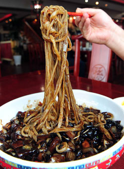

Jjanjangmyeon

Description
Jjajangmyeon is a popular Korean-Chinese dish made with wheat noodles and a thick black bean sauce, typically
made from fermented black soybeans. It is usually topped with diced meat (usually pork), vegetables, and
sometimes seafood. The dish is said to have originated in China and was introduced to Korea during the late 19th
century. It is considered a comfort food in Korea and is often served in restaurants specializing in
Chinese-Korean cuisine.
Ingredients
- jjajangmyeon noodles
- ½ pound pork belly, cut into ½ inch cubes (about 1½ cups’ worth)
- 1 cup of Korean radish (or daikon), cut into ½ inch cubes (about 1 cup’s worth)
- 1 cup of zucchini, cut into ½ inch cubes
- 1 cup of potato, peeled and cut into ½ inch cubes
- 1½ cups of onion chunks
- 3 tablespoons of vegetable oil
- ¼ cup and 1 tablespoon of chunjang (Korean black bean paste)
- 2 tablespoons of potato starch powder, combined with ¼ cup water and 1 teaspoon of sugar in a small bowl, set aside
- 1 teaspoon of toasted sesame oil
- ½ cup cucumber, cut into thin matchsticks for garnish
- water
Steps
- Stir-fry the pork belly in a large, deep wok (or pan) with 1 tablespoon of vegetable oil for about 4-5 minutes, until golden brown and crispy.
- Pour out the excess pork fat.
- Add radish and stir fry for 1 minute.
- Add potato, onion, and zucchini and keep stirring for about 3 minutes until the potato looks a little translucent.
- Clear a space in the center of the wok by pushing the ingredients to the edges.
- Add 2 Tablespoons of vegetable oil to the center of the wok, then add ¼ cup of black bean paste and stir it with a wooden spoon for 1 minute to fry it. Then mix everything in the wok and keep stirring.
- Add 2 cups of water to the wok and let it simmer and cook with the lid closed for about 10 minutes.
- Open the lid and taste a sample of the radish and potato. If they’re fully cooked, stir in the starch water little by little. Keep stirring until it’s well mixed and thick.
- Add the sesame oil and remove from the heat.
- Serve with noodles (jjajangmyeon) or steamed rice (jjajangbap).